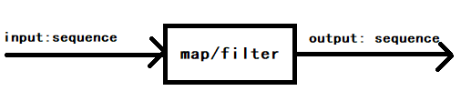
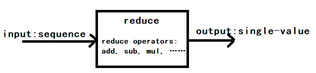
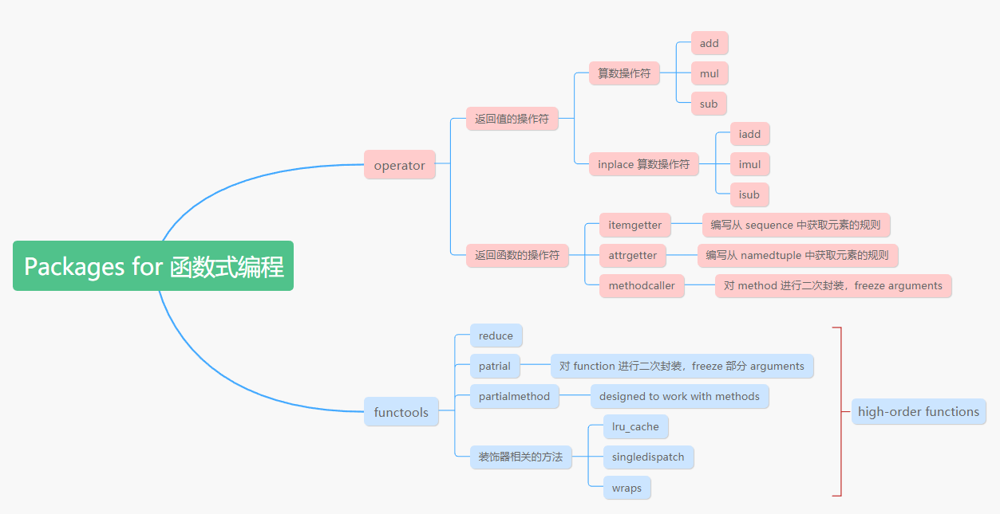

Chapter5. First-Class Functions
从第五章开始，一直到第七章，都是在研究函数。
[TOC]
What is First-Class Functions
Functions are treated like any other variable. Treating functions as objects.
函数也被作为一个对象，其和对象一样，是 Python 语言中的第一公民。一个对象，其可以拥有属性，也可以定义其对应的方法，也可以将其赋值为其他变量。
Demo:
def factorial(n):
"""return n!"""
return 1 if n < 2 else n * factorial(n-1)
fact = factorial # function 作为变量传递给另外一个变量
# fact 作为变量传入 map 方法，其参数为 range 生成的数据，map 返回一个 iterated 的对象
list(map(fact, range(10)))
# 等价于
list(map(factorial, range(10)))
函数的 attributes
Demo:
print(factorial.__doc__) # return n!
# __doc__ 用于生成 help text of and object
print(help(factorial))
"""
Help on function factorial in module __main__:
factorial(n)
return n!
None
"""
dir(factorial) # 查看 factorial 的属性
"""
['__annotations__', '__call__', '__class__', '__closure__', '__code__', '__defaults__', '__delattr__', '__dict__', '__dir__', '__doc__', '__eq__', '__format__', '__ge__', '__get__', '__getattribute__', '__globals__', '__gt__', '__hash__', '__init__', '__init_subclass__', '__kwdefaults__', '__le__', '__lt__', '__module__', '__name__', '__ne__', '__new__', '__qualname__', '__reduce__', '__reduce_ex__', '__repr__', '__setattr__', '__sizeof__', '__str__', '__subclasshook__']
"""
赋予 function attribute
factorial.short_desc = "阶乘"
查看 function 所有自定义的 attribute
print(factorial.__dict__)
# {'short_desc': '阶乘'}
| 属性 | desc |
|---|---|
__dict__ | 获取 function 的所有自定义的 attribute |
__name__ | 获取函数名 |
__doc__ | 获取函数的注释 |
__closure__ | 获取闭包绑定的 free 变量 (list) |
__defaults__ | tuple(位置参数和关键字参数的默认值) |
__code__.co_varnames | tuple(存储了函数参数的name还有函数中定义的name) |
__code__.co_argcount | value: 参数的个数，不包括以 * 和 ** 打头的参数 |
__annotations__ | dict{ 函数的注解，包括输入和输出的注解}，Python3 引入 |
函数的 methods
Higer-Order Functions
A function that takes a function as argument or returns a function as the result is a higher-order function.
传入或者返回一个函数的函数叫做 higer-order-function。
Higer-Order Functions: sort, map, filter, reduce
Demo: sort()
def reverse(word):
"""逆置word"""
return word[::-1]
fruits = ["straberry", "fig", "cherry", "apple", "banana"]
sorted(fruits, key=reverse) # key 为一个 function，返回排序后的 sorted object，是一个新的 object, sorted 并不是 inplcae 方法，lst.sort() 是 inplace 方法
# 结果为：["banana","apple", "fig", "straberry", "cherry"]
# 上述代码执行的步骤：
# 1. 根据传入的 key 函数，对 fruits 进行变换，得到变换后的 list
# 2. 对 fruits 按照变换后的规则进行排序
# 其他变换规则
sorted(fruits, key=len)
Modern Replacements for map/filter/reduce
lambda / map / filter / reduce 的特性源于 Lisp.
Chapter2 中已经指出，任何用到 map 和 filter 的地方，都可以用 列表推导式 和 生成器表达式来替换。而 reduce 可以被 sum, all, any 等 Python 自带的built-ins 取代。Demo:
list(map(factoria, filter(lambda n: n % 2, range(6)))) # list of factorial of odd numbers up to 5!, using both map and filter
from functools import reduce
from operator import add
# 两者等价
reduce(add, range(100))
sum(range(100))
all(iterable)
any(iterable)

reduce
The common idea of reduce is to apply some operation to successive items in a sequence, accumulating previous result, thus reducing a sequence of values to a single value.
reduce 用于对一个 sequence 进行 successive compute，从而得到一个 single value。降维。

from functools import reduce
from operator import add, sub
reduce(add, range(10)) # 等价于 0 + 1 + 2 + …… + 9
reduce(sub, [1,2,3]) # 等价于 1 - 2 - 3
Other reducing built-ins:
all(iterable) # return true if all value is true
any(iterable) # return true if one value is true
all(["1", [1], (1), {1:2}]) # true
all(["1", [1], (1), {}]) # false
any(["1", [1], (1), {}]) # true
注意：
- 在 Python3 中， map 和 filter 会返回一个 generator (iterable)对象，并不是一个 sequence
Anonymous Functions
keyword lambda 用于创建一个匿名函数，其本质上是一个语法糖（syntactic sugar）。
**lambda expression 的优点和应用场景：**简洁，适合处理 sequence，通常用于 Higher-Order-Function 的函数参数
**匿名函数的应用场景：**当一个函数创建出来只需要在一个地方调用的时候，为了减少代码复杂性，其与 Java 和 Javascript 的 inner function，有同样的作用。下面是 JavaScript 对于 inner func 的优点的论述：
This provides a great deal of utility in writing more maintainable code. If a called function relies on one or two other functions that are not useful to any other part of your code, you can nest those utility functions inside it. This keeps the number of functions that are in the global scope down, which is always a good thing.
This is also a great counter to the lure of global variables. When writing complex code it is often tempting to use global variables to share values between multiple functions — which leads to code that is hard to maintain. Nested functions can share variables in their parent, so you can use that mechanism to couple functions together when it makes sense without polluting your global namespace — "local globals" if you like. This technique should be used with caution, but it's a useful ability to have.
**lambda expression 的缺点：**不能处理复杂的逻辑，比较晦涩，unreadable
Demo:
fruits = ["straberry", "fig", "cherry", "apple", "banana"]
sorted(fruits, key=lambda fruit: fruit[::-1])
# 其等价于
sorted(fruits, key=reverse)
值得注意的是，lambda expression 除了应用在 High-Order-Function 中，其他地方使用得不多。
去 lambda expression 的四个步骤
如果我们发现一个 lambda expression 十分晦涩难懂，那么可以用如下步骤来解决：
- 理解这个 lambda expression 的业务逻辑
- 对业务逻辑进行重命名
- 用步骤二的名字 def 一个 function，用 function 替代 lambda expression
- 移除 lambda expression
Callable Objects
Definition
A callable object is an object that can accept some arguments (also called parameters) and possibly return an object (often a tuple containing multiple objects). A function is the simplest callable object in Python, but there are others, such as classes or certain class instances. From wikibooks
如何判断一个 object 是否是 callable object:
[callable(obj) for obj in (abs, str, 13)]
# print [True, True, False]
What are the methods, functions, built-in？
Class 中定义的函数叫 method
非 Class 中定义的函数叫 function
| methods | functions | |
|---|---|---|
| built-in | Python 自带类中定义的 method，例如：dict.get() 的 get 方法 | Python 自带的 function，例如 len, str |
| user-defined | 用户定义类中定义的 method | 用户定义的 function |
Seven Callable Objects
User-defined Functions
Created with def statements or lambda expressions.
import pandas as pd
def get_columns(pd_data):
return pd_data.columns.tolist()
Built-in Functions
A function implemented in C (for CPython), like len() or time.strftime
Built-in methods
Methods implemented in C, like dict.get
Methods
Functions defined in the body of a class.
Classes
For example, pd_data = pd.DataFrame([(1,2,3),(4,5,6)], columns=["a"， "b", "c"])
Class instances
If a class defined a __call__ method, then its instances may be invoked as functions.
也就是说，如果一个 class 实现了 __call__() 方法，那么其对象就可以像方法一样被调用，参考 [User-Defined Callable Types](#User-Defined Callable Types)
Generator functions
Functions or methods that use the yield keyword. When called, generator functions return a generator object.
User-Defined Callable Types
一个类只要实现了 __call__ 方法，那么其对象就是一个 callable object
class BingoCage:
def __init__(self, items):
self._items = list(items) # deep copy
random.shuffle(self._items)
def pick(self):
try:
return self._items.pop()
except IndexError:
raise LookupError("pick from empty BingoCage")
def __call__(self):
""" 实现了该方法后，该类的对象，就可以被当成函数一样调用该方法 """
return self.pick()
bingo = BingoCage(range(3))
print(bingo.pick()) # 1
print(bingo()) # 0，注意这里，一个对象，也可以是 callable object, shortcut to bingo.pick: bingo()
print(callable(bingo)) # True
Function Introsepction (Function 深挖)
Get Function All Attributes
如何查看一个对象的属性，包括一个函数对象的属性？dir()
dir(factorial)
"""
['__annotations__', '__call__', '__class__', '__closure__', '__code__', '__defaults__', '__delattr__', '__dict__', '__dir__', '__doc__', '__eq__', '__format__', '__ge__', '__get__', '__getattribute__', '__globals__', '__gt__', '__hash__', '__init__', '__init_subclass__', '__kwdefaults__', '__le__', '__lt__', '__module__', '__name__', '__ne__', '__new__', '__qualname__', '__reduce__', '__reduce_ex__', '__repr__', '__setattr__', '__sizeof__', '__str__', '__subclasshook__']
"""
上述大多数的属性，都是 Python 对象通用的属性，我们主要分析和 Function 作为 object 相关的属性：__dict__。
attribute: __dict__
Function 作为一个 object，其肯定和其他对象一样，也有 attribute 和 method。__dict__ 就是用于查看 function object 的 attribute，__dict__ 用于存储 function 的 attribute 和对应的值。
factorial.short_desc = "斐波那契数列"
print(factorial.__dict__)
# {'short_desc': '斐波那契数列'}
Positional Parameters vs Keyword-Only Parameters
从位置参数到关键字参数。Python 3 中引入 Keyword-Only Parameters.
- 可以利用
*param传入更多的位置参数，可以利用**attrs传入更多的键值参数 cls=None的规则可以用于设置 default 参数，例如：cls=default_value
注意：
-
位置参数在调用时必须给定
-
函数调用时，可以不传入关键字参数，而只传入位置参数
-
关键字参数应该在位置参数后面进行定义
Demo1:
def tag(name, *content, cls=None, **attrs): # name 和 cls 之间的参数，全部打包给 content(tuple类型)
"""Generate one or more HTML tags"""
if cls is not None:
attrs['class'] = cls
if attrs:
attr_str = ''.join(' %s="%s"' % (attr, value) for attr, value in sorted(attrs.items()))
else:
attr_str = ''
if content:
return '\n'.join('<%s%s>%s</%s>' % (name, attr_str, c, name) for c in content)
else:
return '<%s%s />' % (name, attr_str)
>>> tag('br')
'<br />'
>>> tag('p', 'hello')
'<p>hello</p>'
>>> print(tag('p', 'hello', 'world'))
<p>hello</p>
<p>world</p>
>>> tag('p', 'hello', id=33)
'<p id="33">hello</p>'
>>> print(tag('p', 'hello', 'world', cls='sidebar'))
<p class="sidebar">hello</p>
<p class="sidebar">world</p>
>>> tag(content='testing', name="img")
'<img content="testing" />'
>>> my_tag = {'name': 'img', 'title': 'Sunset Boulevard',
... 'src': 'sunset.jpg', 'cls': 'framed'}
>>> tag(**my_tag)
'<img class="framed" src="sunset.jpg" title="Sunset Boulevard" />'
Demo2:
def run(a, b):
print a + b
dictionary = {'a': 1, 'b': 2}
run(**dictionary) # ** 的作用，类似于 *(1,2,3) 的 unpack
Retriving Information About Parameters: inspect
我们在只知道函数接口的情况下，如何获知 function 的所有参数及其类型？Python标准库: inspect
| 属性 | desc |
|---|---|
__defaults__ | tuple(位置参数和关键字参数的默认值) |
__code__.co_varnames | tuple(存储了函数参数的name还有函数中定义的name) |
__code__.co_argcount | value: 参数的个数，不包括以 * 和 ** 打头的参数 |
通过 __defaults__ 变量，我们可以得到函数的参数的默认值，通过 __code__ 变量，我们可以知道变量的名字还有变量的个数。通过这两个变量，我们就可以倒推出所有的变量和默认值。
def factorial(n=5):
"""return n!"""
return 1 if n < 2 else n * factorial(n-1)
factorial.__defaults__ # (5,)
factorial.__code__.co_argcount # 1
factorial.__code__.co_varnames # ('n',)
不过有一个 Python 的 built-in package 已经帮我们封装好了该功能：inspect, Demo:
from inspect import signature
def foo(num, mul=10):
pass
sig = signature(foo) # <class 'inspect.Signature'>
for name, param in sig.parameters.items(): # inspect.Signature.parameters 是一个 map object
print(param.kind, ":", name, "=", param.default)
"""
POSITIONAL_OR_KEYWORD : num = <class 'inspect._empty'>
POSITIONAL_OR_KEYWORD : mul = 10
"""
其中，inspect._empty 表示该参数没有 default value，kind 表示该参数的参数类型。
inspect.Signature 对象有一个 bind 方法，用于将参数绑定到函数进行测试，看看传入的参数是否满足函数的要求。Demo:
>>> import inspect
>>> sig = inspect.signature(tag)
>>> my_tag = {'name': 'img', 'title': 'Sunset Boulevard',
... 'src': 'sunset.jpg', 'cls': 'framed'}
>>> bound_args = sig.bind(**my_tag)
>>> bound_args
<inspect.BoundArguments object at 0x...>
>>> for name, value in bound_args.arguments.items():
... print(name, '=', value)
...
name = img
cls = framed
attrs = {'title': 'Sunset Boulevard', 'src': 'sunset.jpg'}
>>> del my_tag['name']
>>> bound_args = sig.bind(**my_tag)
Traceback (most recent call last):
...
TypeError: 'name' parameter lacking default value
很多 Framework 和 IDE 会利用 inspect.Signature.bind() 方法来判断用户输入的参数是否合理，从而给出错误提示。
Function Annotation: 函数注解
Python3 中引入了函数注解，用于解释函数的参数和返回值等信息，函数注解存储在 __annotations__ 中。
语法：
def foo(html:str, num:"int > 0"=10) -> str:
pass
输出函数注解：
foo.__annotations__
{'html': <class 'str'>, 'num': 'int > 0', 'return': <class 'str'>}
注意，Python 对于这些函数注解，只是将其放在了 __annotations__ 中，其他就没有进行任何的操作，更不会进行代码的check。事实上，函数的注解 Annotation 更多的被 IDE 和 装饰器 使用，其对于 Python 的解释器来说，没有任何作用。
Packages for Functional Programming
Python 语言的创立者 Guido 并没有想要 Python 成为一个函数式编程语言，但是通过两个标注库的帮助，我们可以实现 Python 的函数式编程：operator, functools。在函数式编程中，函数常常被当作参数进行传递，而 operator 中恰恰就提供了一些基础的函数操作，operator 中提供的操作符，实际上就是函数。

operator
operator 提供了很多操作符，这些操作符实际上就是匿名函数。其中有两类操作符：
- 算数操作符：
add, mul, sub - 用来从 sequence 选取元素、从对象中读取属性的操作符：
itemgetter, attrgetter，返回元素为 tuple 的 sequence。（itemgetter 使用了 [] operator，只要是实现了__getitem__()这个魔法方法的类型，都可以将 itemgetter 应用到其中）
注意，itemgetter 和 attrgetter 这两个操作符，实际上都是函数，其返回的对象也是函数。
算数操作符举例：
from functools import reduce
from operator import mul
def fact(n):
return reduce(mul, range(1, n+1))
# 如果我们不适用 operator，则需要创建一个 lambda expression，(匿名函数)
# return reduce(lambda x,y: x*y, range(1, n+1))
选取元素操作符举例：(针对 sequence 数据结构，返回 sequence)
from operator import itemgetter
students = [
("wansho", 23, "lianyungang", (99, 100)),
("wangkai", 25, "qingdao", (99, 100)),
("zhanganman", 24, "xuzhou", (99, 100))
]
sorted_students_in_ages = sorted(students, key=itemgetter(1)) # 根据学生的年龄排序, sorted_by
print(sorted_students_in_ages)
print(list(map(itemgetter(0,1), students))) # 取 0，1列，此处的 itemgetter 定义了一个抓取数据的规则
获取属性操作符：(针对键值对数据结构，返回属性对应的值)
from operator import attrgetter
from collections import namedtuple
Student = namedtuple("Student", "name age home scores")
Score = namedtuple("Score", "math, english")
students_namedtuple = [Student(name, age, home, Score(math, english))
for (name, age, home, (math, english)) in students]
print(students_namedtuple)
attrgetter_name_score = attrgetter("name", "scores.math") # 定义了一个函数
for item in students_namedtuple:
print(attrgetter_name_score(item)) # 将 item(namedtuple) 作为参数传入预先定义好的规则
""" print
('wansho', 99)
('wangkai', 99)
('zhanganman', 99)
"""
获取所有的操作符
import operator
print([item for item in dir(operator) if not item.startswith("_")])
"""
['abs', 'add', 'and_', 'attrgetter', 'concat', 'contains', 'countOf', 'delitem', 'eq', 'floordiv', 'ge', 'getitem', 'gt', 'iadd', 'iand', 'iconcat', 'ifloordiv', 'ilshift', 'imatmul', 'imod', 'imul', 'index', 'indexOf', 'inv', 'invert', 'ior', 'ipow', 'irshift', 'is_', 'is_not', 'isub', 'itemgetter', 'itruediv', 'ixor', 'le', 'length_hint', 'lshift', 'lt', 'matmul', 'methodcaller', 'mod', 'mul', 'ne', 'neg', 'not_', 'or_', 'pos', 'pow', 'rshift', 'setitem', 'sub', 'truediv', 'truth', 'xor']
其中，以字母 i 为前缀的操作符，其都是 inplace 函数
"""
from operator import iadd
num1 = 10
num2 = 2
num1 = iadd(num1, num2) # 等价于 num1 += num2
methodcaller
methodcaller 可以对 method（classmethod）进行二次封装，然后返回封装后的函数，通常用于 freezing arguments。
应用场景：将参数冻结，然后复用这个函数
from operator import methodcaller
my_replace = methodcaller("replace", " ", "-") # 注意：封装的函数名必须是 stringed method
print(my_replace("nihao hello world")) # nihao-hello-world
functools
functools 中有很多 high-order functions，也就是说，可以传入函数参数或者返回函数的函数。
functools 中最常用的两个函数：reduce, partial, partialmethod
partial 和 partialmethod 通常用于对 function 和 classmethod 进行二次封装，其中 partialmethod 经常用于 classmethod 的重载。
from functools import partial, partialmethod
from operator import mul
my_mul = partial(mul, 3) # mul 是一个 function，freeze 好一个参数，剩下另一个参数
lst = [my_mul(num) for num in range(10)]
print(lst)
>>> class Cell(object):
... def __init__(self):
... self._alive = False
... @property
... def alive(self):
... return self._alive
... def set_state(self, state):
... self._alive = bool(state)
... set_alive = partialmethod(set_state, True)
... set_dead = partialmethod(set_state, False)
...
>>> c = Cell()
>>> c.alive
False
>>> c.set_alive()
>>> c.alive
True
# 注意, functools.partial 的 operator.methodcaller 的不同之处在于，methodcaller 封装的函数名必须是 string method，而 functools.partial 封装的函数名必须是 function，functools.partialmethod 封装的函数名必须是 method
Further Reading
-
Everything that is good in Python was stolen from other languages. ——Guido